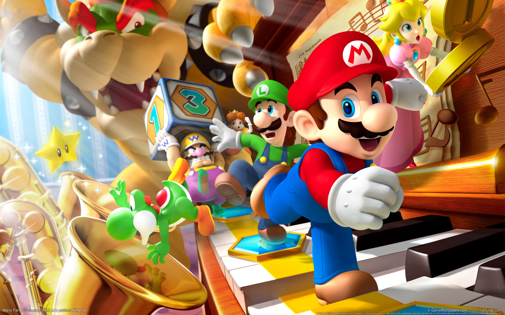
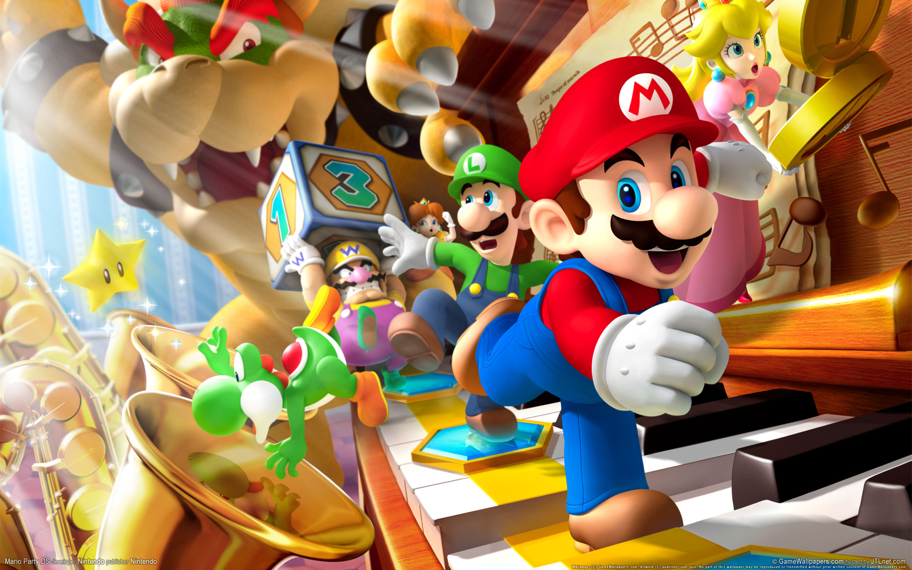

Mario é um filme baseado na série de video games, Super Mario Bros, da Nintendo. Em Super Mario Bros. - O Filme, Mario (Chris Pratt) é um encanador qualquer no bairro de Brooklyn junto com seu irmão Luigi (Charlie Day). Um dia, Mario e Luigi vão para no reino dos cogumelos, governado pela Princesa Peach (Anya Taylor-Joy), mas ameaçado pelo rei dos Koopas, Bowser (Jack Black).
TRAILER